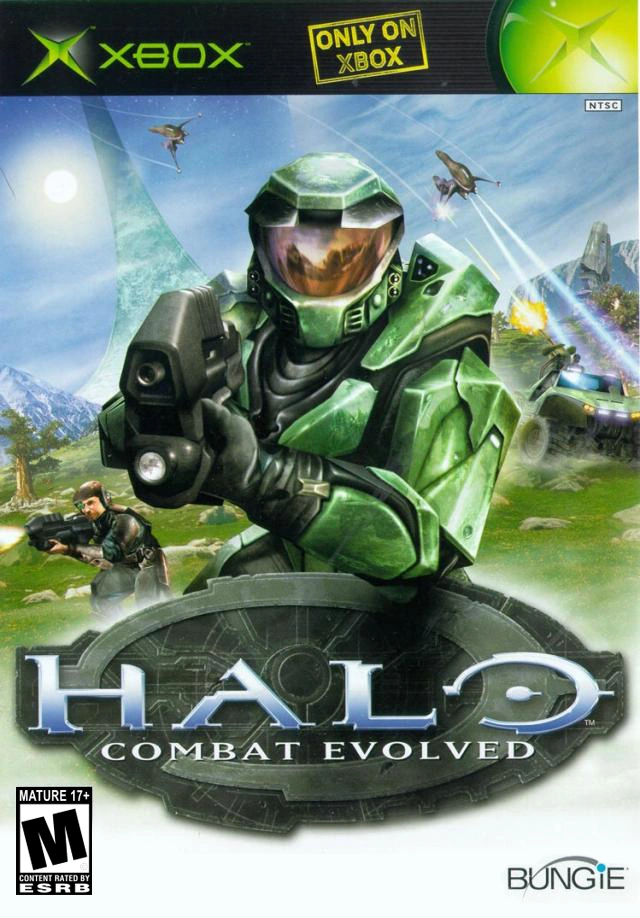
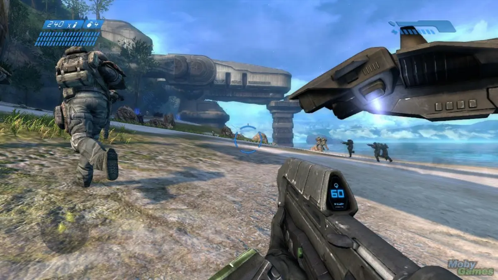
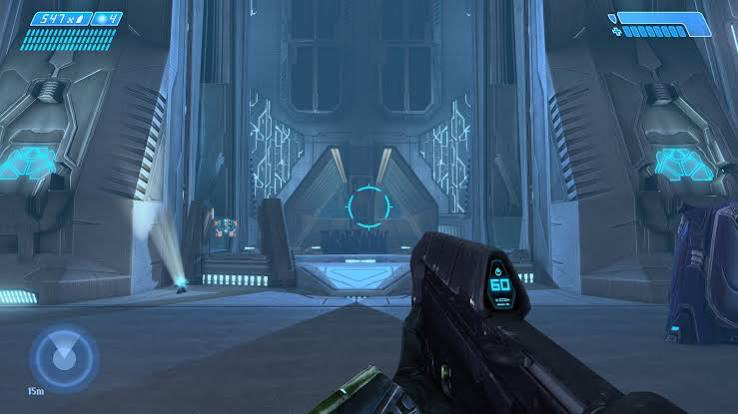
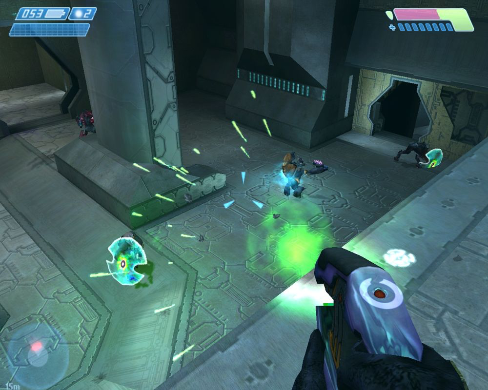
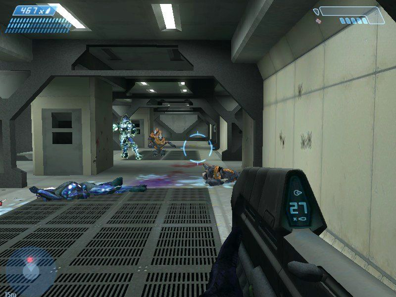
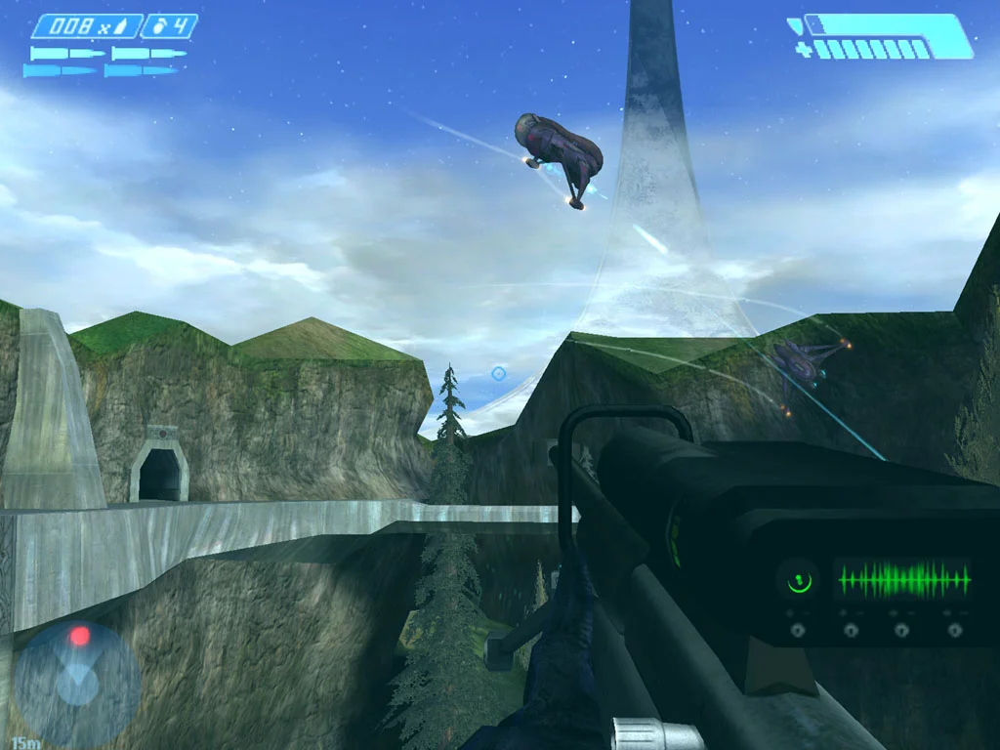
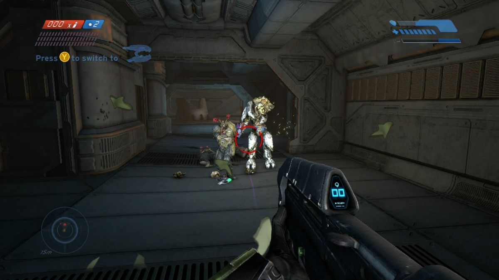

Año de Lanzamiento: 2001
Desarrollador: Bungie
Consola: Xbox
Género: Disparos en primera persona (FPS)
Tras la aplastante derrota de las fuerzas humanas en el planeta Reach, la nave militar Pillar of Autumn ejecuta un salto hiperespacial a ciegas para evitar que el Covenant rastree la ubicación de la Tierra. Al salir del hiperespacio, la tripulación descubre una monumental estructura artificial con ecosistema propio construida en forma de anillo: la Instalación 04. Al ser atacados por la flota enemiga, el Capitán Jacob Keyes ordena el despertar del supersoldado Spartan John-117 (el Jefe Maestro) y le encomienda la protección de Cortana, la IA más avanzada de la UNSC, para evitar que el Covenant obtenga los secretos tácticos de la Tierra.
Al estrellarse en la superficie del anillo, el Jefe Maestro organiza la resistencia guerrilla junto a los marines supervivientes. Sin embargo, lo que parecía una batalla por el control territorial cambia radicalmente cuando descubren la verdadera función del anillo. La estructura no es una estación espacial religiosa como cree el Covenant, sino un centro de contención para el Flood, una plaga parasitaria cósmica que consume toda forma de vida consciente. Para evitar que el Flood se expanda por la galaxia, el monitor del anillo, 343 Guilty Spark, intenta engañar al Jefe Maestro para activar Halo, ocultando que el disparo del anillo destruirá toda la vida sensible del universo para matar de hambre al parásito.





